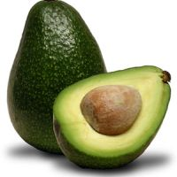

La Palta
La alimentación naturista tiende a estar de moda en diferentes países principalmente por una cuestión básica: aporta un buen número de propiedades y beneficios al organismo, y ayuda al correcto y buen funcionamiento de la salud. Se caracteriza porque los alimentos que únicamente consume la persona que adopta la alimentación naturista es fundamentalmente natural y vegetal, evitando siempre el consumo de alimentos de origen animal (podría decirse que es una alimentación sana en sí misma).